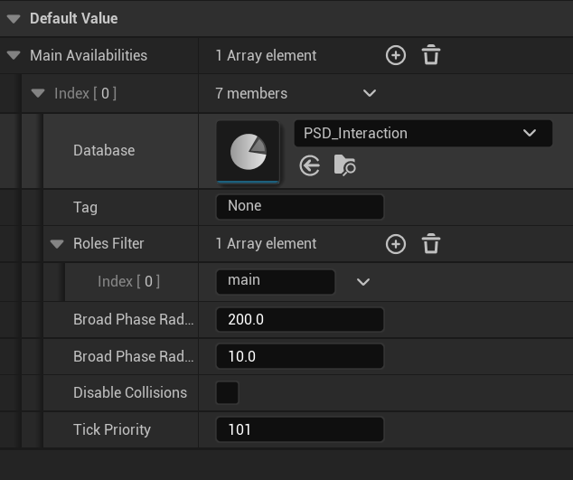

UE-MotionMatchingInteraction架构分析
模块：PoseSearch。目前对于MotionMatchingInteraction，无任何官方文档，无任何官方示例（即便是写这篇文章时Epic发布的UE5.7的GASP项目），故仅作参考。
关键类分析
Availabilities
Availability可以理解为我当前角色在本帧声明的交互意图和约束。
类声明在 PoseSearchInteractionAvailability.h 中：
1 | // input for MotionMatchInteraction_Pure: it declares that the associated character ("AnimContext" that could be an AnimInstance or an AnimNextCharacterComponent) |
在蓝图中可以设置：

各字段含义： - Database：类型为 UPoseSearchDatabase，里面存多角色交互资产。该参数直接指定要参与哪个动画数据库交互。 - Tag：如果Database有效，则用Tag标记数据库的特定名称。不同的Availabilities可以共享同一个Tag。如果Database无效，则使用有效的Tag从所有发布的Availabilities中找出所有可能分配给这个Availability的数据库。Tag的作用是允许NPC与主角进行交互，而主角不需要直接依赖于用于交互的数据库，从而允许这些NPC被上下文加载/卸载，流式加载/卸载，这对于交互数据库的内存管理有明显优势。另一个Tag的作用是简化交互设置，主角只需发布一个具有自己分配角色（在RolesFilter中）的Availability，就可以自动在多种可能类型的数据库中进行上下文解析：可能是主角-NPC，主角-车辆，主角-其他。
举个例子吧。假设： 1. 主角 Availability: Database=null, Tag=“MC_INTERACT”, RolesFilter=[“Leader”] 2. NPC_A Availability: Database=DB_MC_NPC_Greet, Tag=“MC_INTERACT”, RolesFilter=[“Follower”] 3. NPC_B Availability: Database=DB_MC_NPC_Trade, Tag=“MC_INTERACT”, RolesFilter=[“Follower”] 那么得到的结果就是，主角不引用任何具体 DB，只声明“我在 MC_INTERACT 频道，想当 Leader”。子系统会用同 Tag 的发布方提供的 DB（Greet/Trade）去组装候选搜索。
- RolesFilter：角色过滤器，角色是由数据库定义的。角色过滤器指定了角色的名称列表，表示该角色愿意参与交互。如果为空，则数据库中的任何角色都可以被接受。
- BroadPhaseRadius：粗筛半径，决定哪些角色在交互中被考虑。只有当所有必要的角色都在这个半径范围内时，交互才有效。
- BroadPhaseRadiusIncrementOnInteraction：交互期间粗筛半径的增量，让“进入难，保持易”
- bDisableCollisions：如果为true，系统将禁用交互角色之间的碰撞。
- TickPriority：具有更高TickPriority的Actor将被选为交互岛（Island）的主Actor，主Actor先Tick，其他交互角色后Tick。TickPriority在你已经强制执行Actor之间的Tick依赖关系时很有用，Motion Matching Interaction系统需要与它们友好地配合。
TickPriority很重要，后续会经常提到。
FInteractionSearchContext
FInteractionSearchContext 可以理解为一次“多角色交互搜索任务”的完整描述，是拿去跑MMI之前的“任务包”。它继承基类 FInteractionSearchContextBase，该基类内部有以下字段： - AnimContexts：参与这次交互搜索的角色上下文列表（谁参与） - PoseHistories：每个参与者对应的姿态历史来源（给 MM 取特征） - Roles：每个参与者在这次搜索中扮演的 role - Database：这次搜索使用的 UPoseSearchDatabase - bDisableCollisions：这次交互若成立，是否要关参与者间碰撞。 然后是子类的字段： - PlayingAsset：上轮/当前在播的资产（弱引用），主要是为了连续性参考？ - PlayingAssetAccumulatedTime：该资产当前累计播放时间 - bIsPlayingAssetMirrored：连续性参考资产是否镜像 - PlayingAssetBlendParameters：若是 blendspace，连续性参考参数 - InterruptMode：这次搜索允许/不允许打断的策略 - bIsContinuingInteraction：这次是否被判定为“延续中的同一交互” - TickPriorities：参与者优先级，用于后续选主执行角色/注入 tick 顺序。
Island
Island是MMI的“调度与执行单元”，可以理解为：一组可能互相交互的角色 + 这组角色的搜索上下文与结果缓存。
它解决的核心问题： 1. 把全场搜索划分成按岛屿为单位进行搜索。假设同一帧有100个角色发布交互，两两配对check会十分耗性能。Island 的作用是先按“可能互相交互”分组，再在组内搜索。 2. 用 Tick 栅栏保证跨角色读写 PoseHistory 的线程安全。交互搜索要读取多角色的轨迹/姿态历史（PoseHistory）。如果各角色动画并发跑且没有执行顺序约束，就可能读到未更新或并发写入的数据。Island则保证“先更新需要的运动信息，再搜索，再分发结果”。 3. 统一“谁执行搜索、谁取结果”，避免重复算。Island规定：只有 MainAnimContext（最高TickPriority） 执行全量搜索，其它角色直接读缓存。
然后来看看 FInteractionIsland 主体字段： 1. PreTickFunction / PostTickFunction：含义：插入 tick 链路前后，形成并发栅栏。Pre 里先准备轨迹，Post 用于结束该阶段并约束后续并发。 2. bHasTickDependencies：当前 island 是否已成功注入 tick 依赖，用于避免重复注入或在未注入时误以为线程安全成立。 3. TickActorComponents ：参与这个 island 的关键 tick 组件（通常是能代表该角色动画/更新时序的组件）。建立 Pre/PostTickFunction 与角色组件之间的前后依赖关系。 4. IslandAnimContexts：这个岛里全部角色上下文（AnimInstance/AnimNextComponent 等）。用于定义“岛成员全集”，每个 SearchContext 只会用它的子集。 5. SearchContexts：本帧要尝试的候选交互组合集合。 6. SearchResults：候选搜索后的有效结果集合。 7. bSearchPerfomed：这个岛本轮是否已经做过搜索。 8. InteractionSubsystem：反向引用所属子系统。
Island的生命周期
首先每个角色在调用 UPoseSearchInteractionSubsystem::Query_AnyThread 的末尾会将自己的 Availabilities 入队： 1
2// queuing the availabilities for the next frame Query_AnyThread
AddAvailabilities(Availabilities, AnimContext, PoseHistoryName, PoseHistory);
具体实现： 1
2
3
4
5
6
7
8
9
10
11
12
13
14
15
16
17
18
19void UPoseSearchInteractionSubsystem::AddAvailabilities(const TArrayView<const FPoseSearchInteractionAvailability> Availabilities, const UObject* AnimContext, FName PoseHistoryName, const UE::PoseSearch::IPoseHistory* PoseHistory)
{
using namespace UE::PoseSearch;
check(AnimContext && AnimContext->GetWorld() && AnimContext->GetWorld() == GetWorld());
const int32 ReservedAnimContextsAvailabilitiesIndex = AnimContextsAvailabilitiesIndex.Add(1);
if (ReservedAnimContextsAvailabilitiesIndex < AnimContextsAvailabilitiesBuffer.Num())
{
FPoseSearchInteractionAnimContextAvailabilities& AnimContextAvailabilities = AnimContextsAvailabilitiesBuffer[ReservedAnimContextsAvailabilitiesIndex];
AnimContextAvailabilities.AnimContext = AnimContext;
AnimContextAvailabilities.Availabilities.Reset();
for (const FPoseSearchInteractionAvailability& Availability : Availabilities)
{
AnimContextAvailabilities.Availabilities.AddDefaulted_GetRef().Init(Availability, PoseHistoryName, PoseHistory);
}
}
}
考虑到 Query_AnyThread 可能在任意线程并行调用，AddAvailabilities 里通过 AnimContextsAvailabilitiesIndex 和 AnimContextsAvailabilitiesBuffer 实现了线程安全的入队。注意这时候还没建立Island，只是将所有 Availability 请求收集起来，存在 AnimContextsAvailabilitiesBuffer 里。
真正建立岛屿的入口在 UPoseSearchInteractionSubsystem::Tick： 1
2
3
4
5
6
7
8
9
10
11
12
13
14
15
16
17
18
19
20
21
22
23
24void UPoseSearchInteractionSubsystem::Tick(float DeltaSeconds)
{
using namespace UE::PoseSearch;
QUICK_SCOPE_CYCLE_COUNTER(STAT_UPoseSearchInteractionSubsystem_Tick);
check(IsInGameThread());
Super::Tick(DeltaSeconds);
FMemMark Mark(FMemStack::Get());
UpdateValidInteractionSearches();
if (ConsolidateAnimContextsAvailabilities())
{
RegenerateAllIslands(DeltaSeconds);
check(ValidateAllIslands());
}
AnimContextsAvailabilitiesIndex.Reset();
}
这里第一个函数是 UpdateValidInteractionSearches。它作用是维护“交互状态副作用”，主要是碰撞开关和“是否持续交互”的语义。如果不做生命周期，你会丢两件事：不知道何时该调用 OnInteractionStart 去关碰撞；不知道何时该调用 OnInteractionEnd 去恢复碰撞。
它做的则是根据上一帧的搜索结果以及上一帧得到的Island来对每个Search结果做这么一个状态生命周期判断。主要有三种情况： 1. 新交互出现（但是是针对上一帧的新交互？）：调用 OnInteractionStart，这时候可能交互双方会关闭碰撞。 2. 交互持续：调用 OnInteractionContinuing， 不重复执行start，不误执行end。 3. 交互结束（即便是针对上一帧，但肯定结束了）：调用 OnInteractionEnd，这时候可能交互双方会恢复碰撞。
然后调用第二个函数 ConsolidateAnimContextsAvailabilities，返回一个bool值。
首先函数需要记录该帧需要处理的Availabilities写入请求数量： 1
2
3
4
5
6
7
8
9
10
11
12const int32 AnimContextsAvailabilitiesIndexValue = AnimContextsAvailabilitiesIndex.GetValue();
AnimContextsAvailabilitiesNum = AnimContextsAvailabilitiesBuffer.Num();
// @todo: add some setttings to initialize AnimContextsAvailabilitiesBuffer to a big enough value
if (AnimContextsAvailabilitiesIndexValue > AnimContextsAvailabilitiesNum)
{
UE_LOG(LogPoseSearch, Error, TEXT("UPoseSearchInteractionSubsystem::ConsolidateAnimContextsAvailabilities not enough space to add more availabilities locklessly. It'll be adjusted automatically, but some availability requests has been lost this frame [capacity %d / requests %d]"), AnimContextsAvailabilitiesNum, AnimContextsAvailabilitiesIndexValue);
AnimContextsAvailabilitiesBuffer.SetNum(AnimContextsAvailabilitiesIndexValue);
}
else
{
AnimContextsAvailabilitiesNum = AnimContextsAvailabilitiesIndexValue;
}
AnimContextsAvailabilitiesIndexValue 是本轮（上一帧） AddAvailabilities() 被调用的总次数。本轮有效长度为 AnimContextsAvailabilitiesNum，如果低于 AnimContextsAvailabilitiesIndexValue，说明有请求被丢了（因为 buffer 不够大？），会自动扩容。
然后对Buffer按照 AnimContext 指针地址排序： 1
2
3
4
5
6// consolidating AnimContextsAvailabilities sharing the same AnimInstance
TArrayView<FPoseSearchInteractionAnimContextAvailabilities> AnimContextsAvailabilities = MakeArrayVie(AnimContextsAvailabilitiesBuffer.GetData(), AnimContextsAvailabilitiesNum);
AnimContextsAvailabilities.Sort([](const FPoseSearchInteractionAnimContextAvailabilities&AnimContextAvailabilitiesA, const FPoseSearchInteractionAnimContextAvailabilities& AnimContextAvailabilitiesB)
{
return AnimContextAvailabilitiesA.AnimContext < AnimContextAvailabilitiesB.AnimContext;
});1
2
3
4
5
6
7
8
9
10
11
12
13
14
15
16
17
18
19
20
21
22
23
24
25int32 WriteIndex = 0;
for (int32 ReadIndex = 1; ReadIndex < AnimContextsAvailabilitiesNum; ++ReadIndex)
{
// Avoiding adding trivial duplicates. FPoseSearchInteractionAvailabilityEx could not be fully specified to understand if it's an actual duplicate in case the pose
// history is passed by name or the Availability.Database is null and supposed to be resolved using other availabilities Database(s) with the same Availability.Tag.
// The duplicated availabilities are excluded when creating the combinations of possible interactions during FAnimContextInfoVisitor when
// FRoledAnimContextInfos.AddRoledAnimContextInfos calls FRoledAnimContextInfos.AddUnique
if (AnimContextsAvailabilities[WriteIndex].AnimContext == AnimContextsAvailabilities[ReadIndex].AnimContext)
{
for (FPoseSearchInteractionAvailabilityEx& AvailabilityEx : AnimContextsAvailabilities[ReadIndex].Availabilities)
{
AnimContextsAvailabilities[WriteIndex].Availabilities.AddUnique(AvailabilityEx);
}
}
else
{
++WriteIndex;
if (WriteIndex != ReadIndex)
{
AnimContextsAvailabilities[WriteIndex] = AnimContextsAvailabilities[ReadIndex];
}
}
}
AnimContextsAvailabilitiesNum = WriteIndex + 1;
所以整个函数做的就是将Buffer中的Availabilities再整理了一遍，保证只有独立的 AnimContext，以及包含了所有输入的 Availability（不丢失的情况下）。如果有至少一个元素则返回 true，然后调用 RegenerateAllIslands 来重建岛屿。
RegenerateAllIslands 第一步是调用 GenerateSearchContexts 生成所有候选的SearchContext。
GenerateSearchContexts 首先会调用 GenerateAnimContextInfosAndTagToDatabases 生成两个信息： - AnimContextInfos：本质是个无向邻接图，它单纯的维护不同 AnimContext 之间是否能够交互的联通关系，没有所谓的边信息（交互数据库，Role等） - TagToDatabases：形如 TagToDatabases["MC_INTERACT"] = [DB_Greet, DB_Trade] 的索引。
然后函数会遍历 AnimContextInfos，把角色分成连通块。这个过程首先通过 FAnimContextInfoVisitor 里的lambda回调 OnNewAnimContextFound 实现，然后第二个lambda回调 OnDoneGroupingAnimContexts 真正得出我们要的SearchContext。